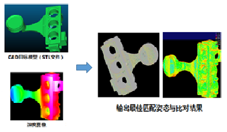
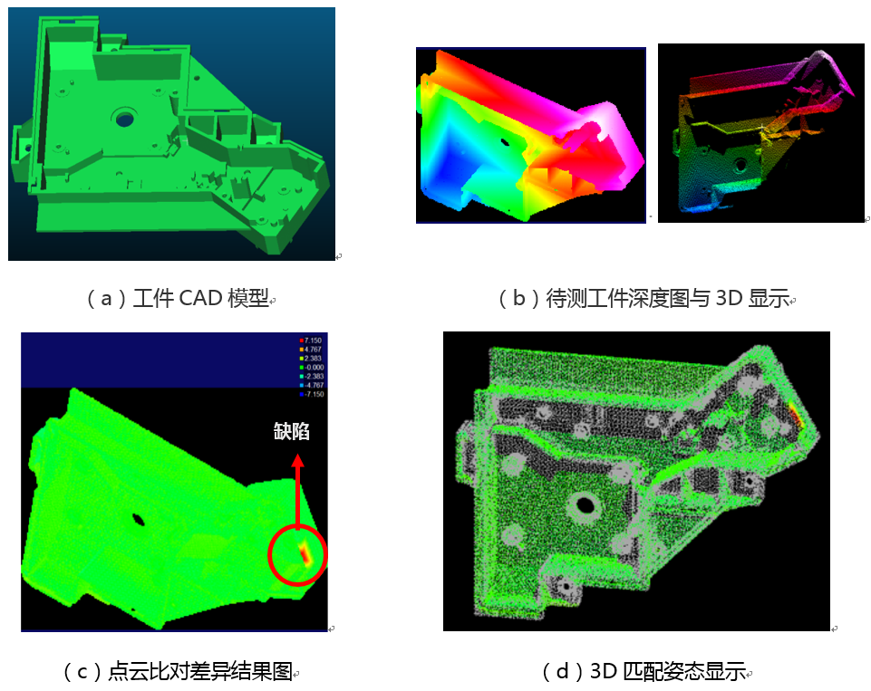
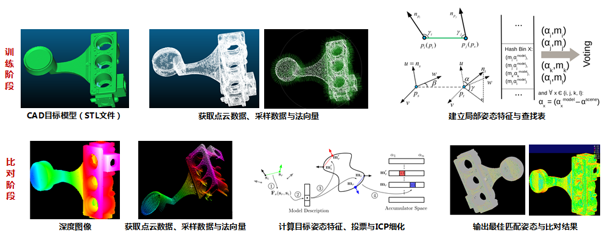
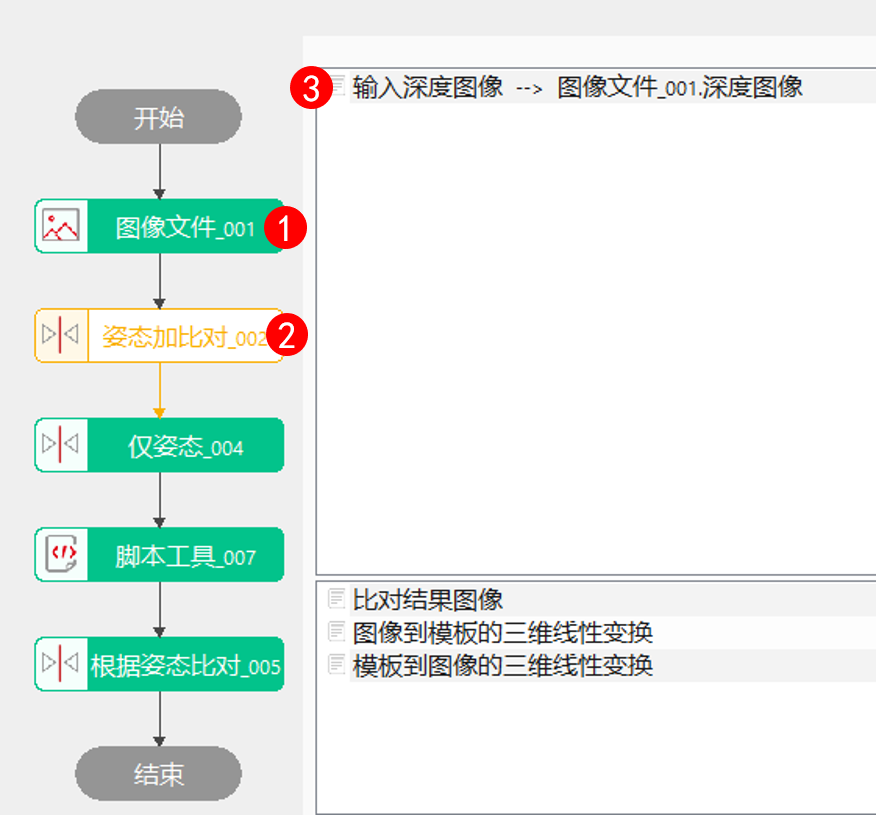
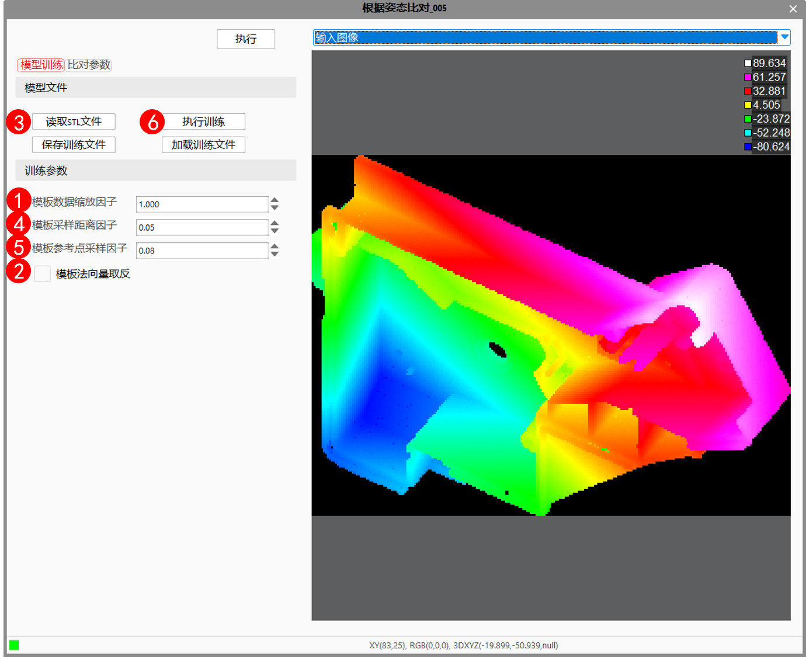
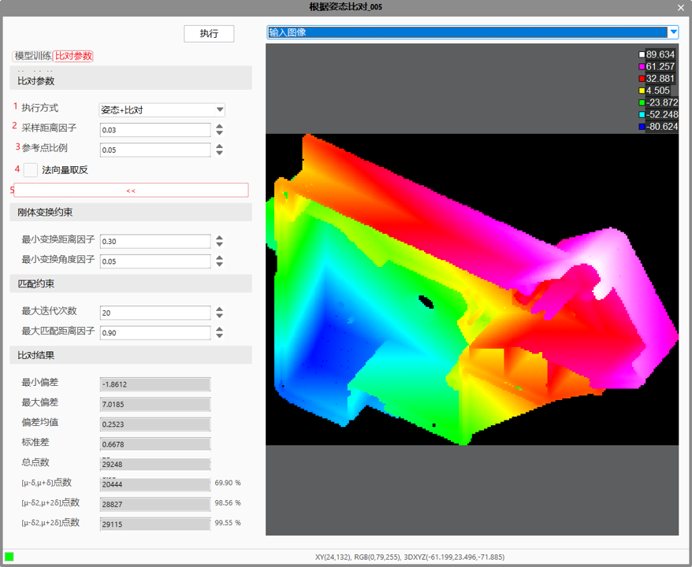
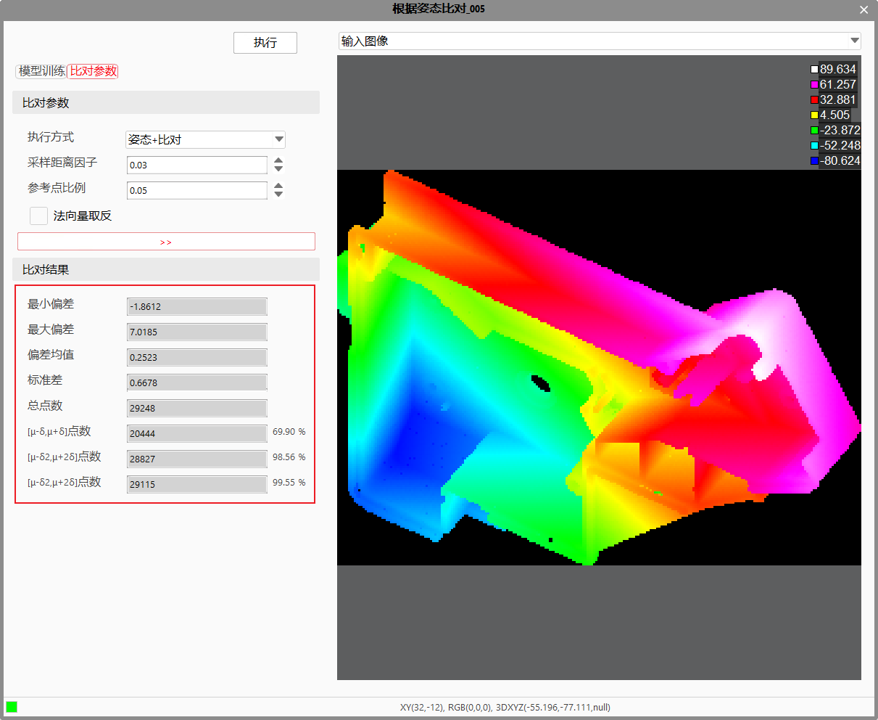

标准CAD模型比对工具提供了待检测工件与其CAD模型（.stl格式）匹配，并比对其与模型之间差异的功能。该功能支持CAD模型（.stl格式）与待测工件在任意位姿下，都可以通过算法实时配准，并将待测工件转换到模型同一姿态下做差异分析，通过输出对比结果图像，将差异部分通过Z值区分出来，同时输出图像和模型之间的姿态转换关系。

在3D工程项目中，常常需要对工件尺寸规格质量做检测，使用轮廓技术无法得到与设计文件匹配且完整连续的差异信息，标准CAD模型比对工具则是在该应用背景下开发的一套算法。使用待检测工件与其CAD模型（.stl格式）匹配，并比对其与模型之间差异的功能，输出差异图像。

标准CAD模型比对工具主要是根据CAD模型文件（stl格式）建立3D局部姿态特征模型，然后利用深度图像的3D数据几何特征，计算目标姿态特征，根据3D姿态模型进行投票与ICP细化，给出最佳3D匹配姿态，最后根据最佳匹配姿态将目标与模型进行点云差异比对，获取目标与模型最邻近特征之间的偏差结果，通过改变Z轴高度差，提取出来，同时输出它们之间的三维线性变换关系，如下图所示。



STL文件
由3D Systems软件公司创立，用于计算机辅助设计软件的文件格式，该格式描述了三维物体的表面几何形状，主要包括原始非结构化三角网格的表面单位法线（指向实体外部）和由右手法则排序的顶点（非负坐标）信息；STL格式中没有尺度信息，且计量单位为任意的。
数据缩放因子
读取STL文件，对顶点xyz坐标进行缩放处理时的缩放比例，该参数主要是解决模型计量单位与实际目标单位之间转换的问题，建议取值为：0.001、0.01、0.1、1.0、10、100、1000等，默认为1.0。
模板采样距离因子
建立3D匹配姿态模型过程中，对读取的点云数据进行采样的参数，该参数根据模板点云的最小包围盒（一个长方体）直径的等比例距离大小作为采样距离，取值范围为：(0,1)。该参数越小，采样点越多，构建模型过程越慢，但匹配精度越高，默认为0.03。需要注意的是，模型采样点的数目也会影响后续实时目标匹配的效率，数目越多匹配效率越慢。
模板参考点采样因子
建立3D匹配姿态模型过程中，对读取的点云数据进行参考点提取的参数，该参数根据模板点云的最小包围盒（一个长方体）直径的等比例距离大小进行参考点采样，取值范围为：(0,1)，且不能小于模板采样距离因子。该参数越小，参考点越多，构建模型过程越慢，但匹配精度越高，默认为0.05。需要注意的是，模型参考点的数目也会影响后续实时目标匹配的效率，数目越多匹配效率越慢。

执行方式
（1）姿态+比对：执行点云配准和点云比对，输出比对结果图像、图像到模型的三维线性变换关系（姿态）、模型到图像的三维线性变换关系（姿态）；
（2）仅姿态：执行点云配准（不执行点云比对），输出图像到模型的三维线性变换关系（姿态）、模型到图像的三维线性变换关系（姿态）；
（3）根据姿态比对：根据输入的三维线性变换关系，执行点云比对，输出比对结果图像；
采样距离因子
目标匹配过程中，对实时深度数据进行采样的参数，该参数根据深度数据的最小边界框（一个旋转的矩形框）直径的等比例距离大小作为采样距离，取值范围为：(0,1)。该参数越小，采样点越多，匹配过程越慢，但匹配精度越高，默认为0.03。
参考点比例
目标匹配过程中，提取实时深度数据中参考点的参数，该参数决定了从实时采样点中提取多少数据作为参考点，取值比例为：(0,1)。该参数越大，参考点越多，匹配过程越慢，但匹配精度越高，默认为0.05。
法向量取反
目标匹配过程中，决定计算深度数据的法向量时是否取反的参数，一般仅在采集目标数据的视点与模型的视点完全相反，即两个视点刚好在目标两侧时，需考虑取反。
最小变换距离因子
目标匹配过程中，两个相似刚体变换矩阵是否考虑为一个刚体变换的参数之一，该参数主要从两个矩阵间变换的最小距离进行衡量，最小距离大小是模板点云的最小包围盒直径与对应因子的乘积，默认取值为0.3。该参数越大，匹配效率越快，但可能会降低匹配精度。
最小变换角度因子
目标匹配过程中，两个相似刚体变换矩阵是否考虑为一个刚体变换的参数之一，该参数主要从两个矩阵间变换的最小旋转角度进行衡量，最小角度大小是180度与对应因子的乘积，默认取值为0.05。该参数越大，匹配效率越快，但可能会降低匹配精度。
最大迭代次数
目标匹配过程中执行ICP细化的最大次数，默认为20。
最大匹配距离因子*
目标匹配过程中，执行ICP细化时，考虑剔除异常点的参数；该参数以变换后最大匹配距离与因子的乘积作为阈值，仅考虑距离阈值内的数据进行刚体变换矩阵的计算。

| 现象描述 | 解决方法 |
|---|---|
| 改动模板数据缩放因子或模板法向量取反之后，提示重新读取STL文件 | 改动模板数据缩放因子或模板法向量取反之后，需要重新读取一次STL文件，参数在读取STL文件过程中生效 |
| 改动模板采样距离因子和模板参考点采样因子后，提示需要重新执行训练 | 改动模板采样距离因子和模板参考点采样因子后，需要重新执行训练，参数在执行训练过程中生效 |
| 参数名称 | 参数说明 |
|---|---|
| 执行方式 | 姿态+比对：执行点云配准和点云比对； 仅姿态：执行点云配准（不执行点云比对）； 根据姿态比对：根据输入的三维线性变换关系，执行点云比对； |
| 采样距离因子 | 输入图像采样距离参数，范围（0-1） |
| 参考点比例 | 输入图像的参考点的比例，范围（0-1） |
| 法向量取反 | 是：对输入图像的法向量进行取反操作； 否：对输入图像的法向量不进行操作； |
| 显示高级参数 | 是：显示高级参数； 否：不显示高级参数； |
| 最小变换距离因子 | 范围（0-1），默认值0.3 |
| 最小变换角度因子 | 范围（0-1），默认值0.05 |
| 最大迭代次数 | 设置姿态匹配的最大迭代次数 |
| 最大匹配距离因子 | 设置姿态匹配的最大匹配距离因子，范围（0-1） |
| 开启并行运算 | 是否开启并行运算，选择是时，算法将开启OpenMp并行计算方式，可以提升计算速度，但可能出现耗时不稳定的情况，选择否时，算法将关闭OpenMp并行计算。 |
| 线程数百分比 | 设置并行运算的线程数百分比，有效范围为 (0, 0.75]，对应表示(0%, 75%]百分比范围。 |
| 输入源深度图像 （图像窗口） | 输入源深度图像 |
| 输入深度图像（数据链） | 用来获取需要比对的深度图像参数。 |
| 输入三维线性变换（数据链） | 用于进行比对 |
| 参数名称 | 参数说明 |
|---|---|
| 比对结果图像 | 输出图像大小、像素、深度图像参数。 |
| 图像到模型的三维线性变换 | 输出旋转平移关系参数。 |
| 模型到图像的三维线性变换 | 输出旋转平移关系参数。 |
| 比对总点数 | 输出比对的所有3D点的数量值。 |
| 偏差均值 | 比对数据的偏差平均值。 |
| 标准差 | 比对数据的标准差。 |
| 比对结果图像（图像窗口） | 差异图像 |
| 比对结果图像（数据链） | 输出图像大小、像素、深度图像参数。 |
| 图像到模型的三维线性变换（数据链） | 输出旋转平移关系参数。 |
| 模型到图像的三维线性变换（数据链） | 输出旋转平移关系参数。 |
参见“\Samples\3D\深度图\标准CAD模型比对工具.gvp”。